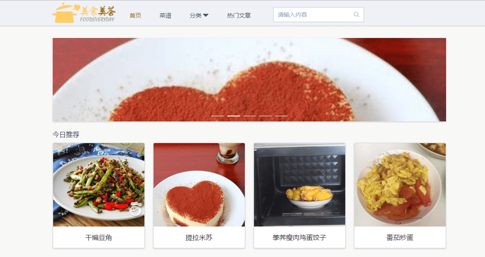
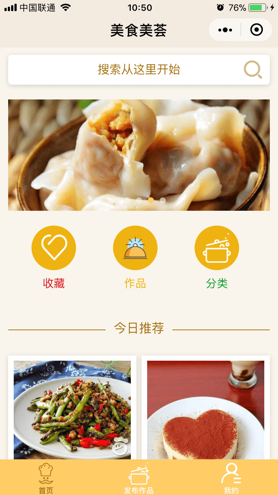
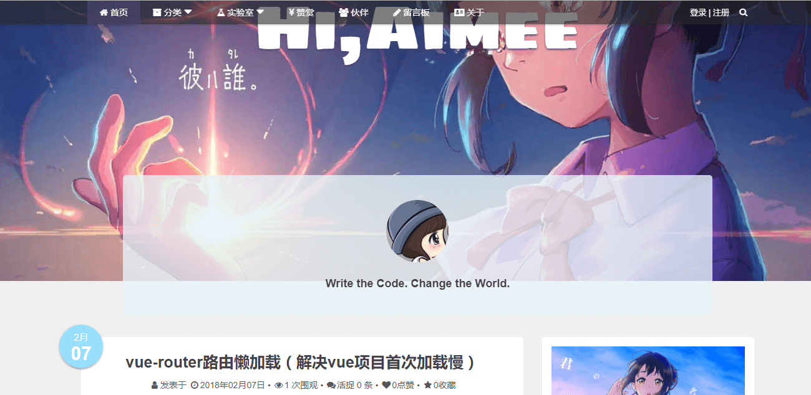

java开发工程师
有扎实的Java面向对象编程语言基础，有良好的编码习惯
熟悉使用MySql、SqlServer、Oracle关系数据库会使用 SQL 语言并熟悉数据库操作
掌握Sqlite非关系型数据库的使用以及SQL语言操作
熟练运用SpringBoot、SpringMvc、Mybatis、Springl等常用的技术框架
会使用 SpringSecurity、Shiro市场上常用的安全框架
了解以及使用过SpringCloud这套生态做过微服务项目
熟悉运用HTML5、CSS、JavaScript、Jquery、Ajax前端技术进行一般开发。
能够使用vue.js框架并结合ElementUI进行模块化页面开发
会使用layui前端框架进行基础开发。
熟悉运用MyEclipse、IntelliJ IDEA2019等开发软件。
熟悉使用喵影工厂剪辑音频
熟练使用宝塔部署本地服务器
了解PS软件的使用，能够对设计进行简单的修改；
熟悉使用maven构建项目以及Git管理项目代码
具备扎实的.net基础知识功底，熟悉使用ASP.NET、MVC、三层架构。
开发时间：
2020.02~2020.03
开发环境：
IDEA2019、MySql、Windows10
项目采用技术：
Spring + Mybatis + SpringBoot、Jquer、Maven、Ajax
项目描述：
当前社会经济的快速发展，为更好地应对挑战，急需以 信息技术为支撑点，以信息化为突破口，通过建设自动化等系统来解决一些日常的管理业务需求从而加快办公，管理 效率，本项目就是为了满足一些中小型企业的办公需求从而设计的。
主要的四大模块：
账本模块：
维护账本信息，随时更新在本系统中，使得账本信息将得到充分的管理，从而发挥最大的价值.
库存管理：
管理着三个仓库得库存配件，每当库存出库入库时都会记录下来这样使得库存的商品使用流向更加清晰。
供应商管理：
存储着所有供应商的信息，可轻松的查看与供应商的业务和资金交易的往来。
员工工资管理：
管理本公司所有员工的个人信息，以及员工的工资可轻松管理员工每个月的工资和休假、预知工资情况，也可以轻松的管理员工每月的奖金和罚款情况。
主要职责：独立完成，项目需求文档编写以及数据的设计，项目后期的细节功能和bug修复，调整一些客户零时提出的需求，包括后期项目的维护和更新。

开发时间：2019/06~2019/08
开发环境：IDEA、JDK1.8、MySql、Windows10
技术选型： Spring、MyBatis、Spring Boot、Maven、Git、HTML、CSS、JavaScript、Jquery、Ajax
项目描述：
服务于校园内二手物品买卖交易，以二手交易为主体，创新服务理念，通过买卖废物给同学灌输一种生活中大多数物品都是有回收价值的思想
，避免有回收价值的物品进入垃圾桶,让废物不废， 做到环保与利益双赢，项目后台使用的是使 用市场上常用的SpringBoot 整合Mybatis框架
，使用SpringBoot 整合可以减少大量配置文件的编写，可以快速开发以及方便后期对网站的维护，数据库使用较稳定的MySql。
主要职责：
1、前台商城：
主要负责后台模块的搭建以及设计数据库和给组员分配任务和需求文档的编写，负责的代码模块有推荐商品模块、
邮件通知模块(通知给用户的信息)、求购商品模块、用户模块(使用 Spring Boot 搭建，基于腾讯QQ邮箱服务完成验证码验证确保
QQ邮箱真实有效，使用MD5来加密用户的密码提高安全性)
2、后台管理：
商品管理模块(审核商品是否合格、商品违规可以对其下架并通过邮箱通知用户商品下架原因)
、用户评论信息管理(可对违规评论进行删除和屏蔽此用户发布的评论)、管理员模块(负给管理员系统的后台权限管理)
3、整合项目以及调试： 由于我在这个项目中担任的是项目组长一职，所以我负责最后的所有其他组员的功能代码整合的任务。
整合完成后对项目的各种基本信息进行测试，确保项目能够正常的使用。

开发时间：2019.01~2019.02
开发环境：IDEA、MySql、Windows10
技术选型：ServletJsp、Jquery、HTML、CSS、JavaScript、Ajax、MySql
项目描述：
采用经典ServletJsp三层架构模式进行窗体开发，以面向对象的方式进行系统设计，利用三层架构的互动使得系统更加容易维护，
60321 火车购票项目以购票为主线，可购买中国各大城市的火车票，提供多种服务退票改签查询买票代售点地址，旅游景区行程服务。
主要职责：
前期与后期：
负责编写前期的需求文档和数据库的表结构设计与实现后期的项目整合。
用户模块：
用户的登录/注册和密码找回修改(MD5加密保证用户的密码安全)等基本功能实现，使用噪音线,背景图片来进行登录验证防止暴力登录。
购票模块：
购票、退票、改签基本功能实现以及退票改签的权限设置(用户只能进行一次改签，退票手续费等权 限管理，通过邮箱的形式通知用户)。
订单模块：
历史订单，待支付订单管理等基本功能的实现删除订单的级联操作。
用于技术分享和总结的个人博客，兼容手机移动端，用户可通过邮箱注册，邮箱验证通过后，可以登录博客，实现点赞以及留言评论等功能，还可以展示个人链接，更新日记，未登录状态可以以游客方式留言，后端使用Java开发
使用 SpringBoot+Spring+Mybatis 框架和HTML+CSS+Jquery来实现前端数据交互。
挂在阿里云服务器上，目前正在持续维护修改

这个简历的源码,设计优雅、内容完善的静态简历页面,可下载world文档
日常中研究封装的一些小插件，360度查看产品展示，jquery版手风琴，jqueryEmoji表情包，加载遮罩模板封装，折叠留言楼层-递归等，可查看 上的源代码
2017 年 9 月 1 日就读于陕西师范大学，计算机应用技术专业
2017 年 8 月在北大青鸟(南昌德弘校区)进修 ACCP 软件开发课程
2018/12/28 获得北大青鸟 ACCP 初级中级程序证书
2018/7/20 全校优秀班干竞选获得《优秀班干奖》
2018/3/1 获得 T49 班级《班长》任命书
曾在学期结束的项目答辩中荣获优秀项目奖
看电影、打篮球、动嘴唱歌、逛技术论坛（博客园、csdn等）
无论遇到什么困难都不要怕，微笑着面对它，消除困难的最好办法就是面对它并且战胜它，奥利给。